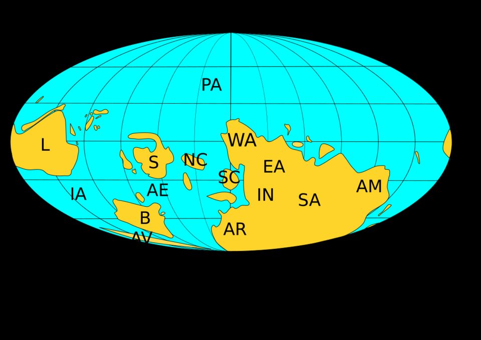

Plate tectonics
The Earth's surface is a jigsaw of plates moving a few centimetres a year. That is how oceans open and mountain ranges rise.

.png){kind=link}
Look at a map and the coasts of South America and Africa fit together like two jigsaw pieces. It is no coincidence: about 180 million years ago they were joined. Plate tectonics explains why continents move, and it is to geology what evolution is to biology: the idea that explains almost everything.
Wegener, the meteorologist nobody believed
In 1912 the German Alfred Wegener proposed that the continents had once been joined in a supercontinent he called Pangaea and had drifted apart. His evidence was strong: the coastlines matched, identical fossils of reptiles and ferns turned up on both sides of the Atlantic, and there were traces of ancient glaciers in places that are now tropical. But he could not explain what force moved the continents, and most geologists mocked him. He died in 1930 on an expedition across Greenland.
His idea was only accepted in the 1960s, when the study of the seafloor revealed underwater mountain ranges where new crust is made, and rocks with symmetrical magnetic stripes on either side. The geologist and cartographer Marie Tharp drew the first map of the Atlantic seafloor and discovered the great central rift.


A moving jigsaw
The lithosphere is divided into about 15 large plates and dozens of small ones. They float on the mantle and move 2 to 15 centimetres a year, about as fast as fingernails grow. What drives them is the heat from inside the Earth and, above all, the weight of plates sinking into the mantle, which pull the rest along.
Three kinds of boundary
- Divergent: plates pull apart and magma rises to fill the gap. This happens at mid-ocean ridges, such as the Atlantic one, which opens about 2.5 cm a year, and on land in Iceland and the East African Rift, which will one day split Africa in two.
- Convergent: plates collide. If one is oceanic it sinks beneath the other in a subduction zone, creating extremely deep trenches and chains of volcanoes, such as the Andes or Japan. If two continents collide, the crust crumples and mountain ranges rise: that is how the Himalayas were born, when India crashed into Asia.
- Transform: plates slide past each other, like the San Andreas Fault in California, a source of major earthquakes.
The Ring of Fire
Around the Pacific Ocean, subduction zones form the Ring of Fire, a 40,000 km arc that holds about three quarters of the world's active volcanoes and most of its great earthquakes.
The Iberian Peninsula
The peninsula sits on the Eurasian plate, close to its boundary with the African plate, which pushes it north a few millimetres a year. That push raised the Pyrenees and the Betic ranges and explains the earthquakes of southern and south-eastern Spain. The Canary Islands, by contrast, are volcanic islands in the interior of the African plate.
The next supercontinent
The continents have come together and split apart several times. In about 200 to 250 million years they will probably join again in a new supercontinent, which some geologists call Pangaea Ultima.
Videos to understand it better
- Plate Tectonics ExplainedMinuteEarth · 3.3M views
- The Plate Tectonics Revolution: Crash Course Geography #19CrashCourse · 835K views
Videos are from YouTube and belong to their creators. They only load when you click them. See all videos →